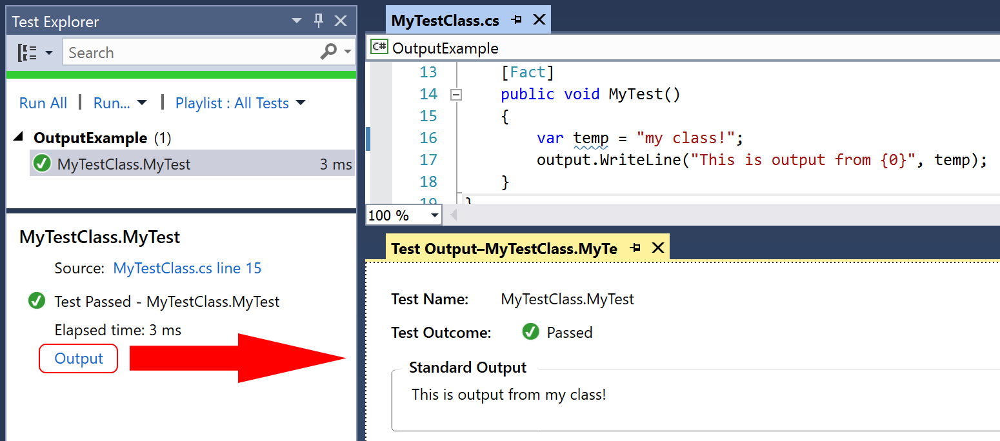

In order to assist in debugging failing test (especially when running them on remote machines without access to a debugger), it can often be helpful to add diagnostic output that is separate from passing or failing test results. xUnit.net offers two such methods for adding output, depending on what kind of code you're trying to diagnose.
If you used xUnit.net 1.x, you may have previously been writing output to
Console, Debug, or Trace. When xUnit.net
v2 shipped with parallelization turned on by default, this output capture
mechanism was no longer appropriate; it is impossible to know which of the
many tests that could be running in parallel were responsible for writing
to those shared resources. Users who are porting code from v1.x to v2.x
should use one of the two new methods instead.
Unit tests have access to a special interface which replaces previous usage of
Console and similar mechanisms: ITestOutputHelper.
In order to take advantage of this, just add a constructor argument for this
interface, and stash it so you can use it in the unit test.
As you can see in the example above, the WriteLine function on
ITestOutputHelper supports formatting arguments, just as you
were used to with Console.
In addition to being able to write to the output system during the unit
test, you can also write to it during the constructor (and during your
implementation of IDisposable.Dispose, if you choose to have
one). This test output will be wrapped up into the XML output, and most
test runners will surface the output for you as well.

Output for unit tests are grouped and displayed with the specific unit test. Output from extensibility classes, on the other hand, is considered diagnostic information. Most runners require you to enable diagnostic output either explicitly with a command line option, or implicitly on an assembly-by-assembly basis by using configuration files.
Each extensibility class has its own individual constructor requirements.
In addition, they can take as their last constructor parameter an
instance of IMessageSink that is designated solely for sending
diagnostic messages. Diagnostic messages implement IDiagnosticMessage
from xunit.abstractions. If you're linked against
xunit.execution, there is a DiagnosticMessage
class in the Xunit.Sdk namespace available for your use.
The extensibility interfaces which currently support this functionality are:
IDataDiscovererITestCaseOrdererITestCollectionOrdererITestFrameworkTypeDiscovererITraitDiscovererIXunitTestCaseDiscovererIXunitTestCollectionFactoryHere is an example of using it in a test case orderer:
{% highlight csharp %} using System.Collections.Generic; using System.Linq; using Xunit.Abstractions; using Xunit.Sdk; public class MyTestCaseOrderer : ITestCaseOrderer { private readonly IMessageSink diagnosticMessageSink; public MyTestCaseOrderer(IMessageSink diagnosticMessageSink) { this.diagnosticMessageSink = diagnosticMessageSink; } public IEnumerableThen after enabling diagnostic messages in App.config:
When run, Visual Studio's output window contains a Tests tab which contains the information from running the tests, including the diagnostic message:
{% highlight text %} ------ Run test started ------ [xUnit.net 00:00:00.1131667] Discovery starting: OutputExample (name display = ClassAndMethod) [xUnit.net 00:00:00.1600619] Discovery finished: OutputExample (1 tests) [xUnit.net 00:00:00.1739819] Execution starting: OutputExample (method display = ClassAndMethod, parallel test collections = True, max threads = 8) OutputExample: Ordered 1 test cases [xUnit.net 00:00:00.1739819] Execution finished: OutputExample ========== Run test finished: 1 run (0:00:00.4369286) ========== {% endhighlight %}